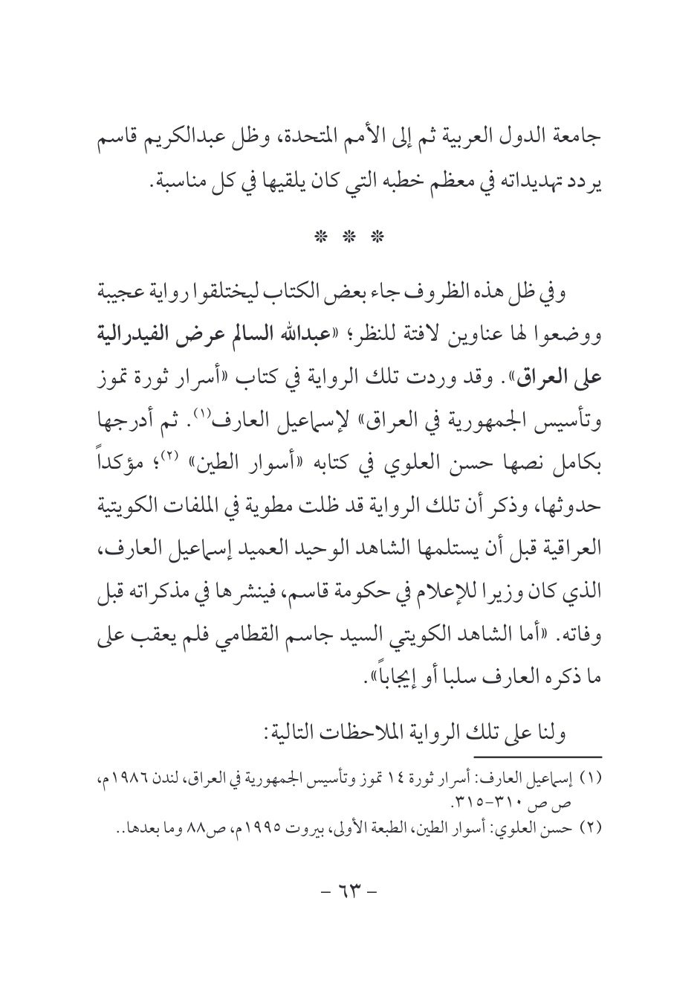

May 1962, published 2020 · Book pages, Prof. Abdullah Yousef Al-Ghunaim, Tariq Al-Kuwait ila Al-Istiqlal (Taqarir wa Mahadir Rasmiya), Center for Research and Kuwaiti Studies, Kuwait, 2020
Tariq Al-Kuwait ila Al-Istiqlal: Jassim Al-Qatami in the secret Zurich talks with Iraq, 1962
What it is
1. In May 1962 Sheikh Abdullah Al-Salem chose a delegation led by Ahmed Al-Omar (Ahmed Al-Sayed Omar), with Jassim Al-Qatami, Under Secretary of the Foreign Ministry, and Adel Al-Jarrah, to meet an Iraqi delegation in secret in Zurich (page 67). 2. Iraqi writers later claimed the talks agreed on a federal union; the author writes that the Kuwaiti witness Jassim Al-Qatami never commented on that account, so his brother Dr Yacoub Yousef Al-Ghunaim contacted him, and the author gives Jassim’s testimony in his own words (pages 63, 72 to 76). 3. Jassim said Sheikh Abdullah Al-Salem asked him to attend a meeting, not a governmental one, at the invitation of Ahmed Al-Sayed Omar; no one came, a second meeting place was set, and again no one came, which showed the hosts were not serious. Sheikh Abdullah chose «one of his men, the late Jassim Al-Qatami» for the task (page 76).
Why it matters
Jassim’s own testimony on a disputed episode of Kuwait’s first year of independence.
Page copies


Notes
Only the first pages are shown here. Family members who sign in can see all 8 pages.
Sources
Prof. Abdullah Yousef Al-Ghunaim, Tariq Al-Kuwait ila Al-Istiqlal, Center for Research and Kuwaiti Studies, 2020, pages 63, 67, 72 to 74, 76 and 195
How this text was made: Page 75 was not sent.
Open in the interactive site